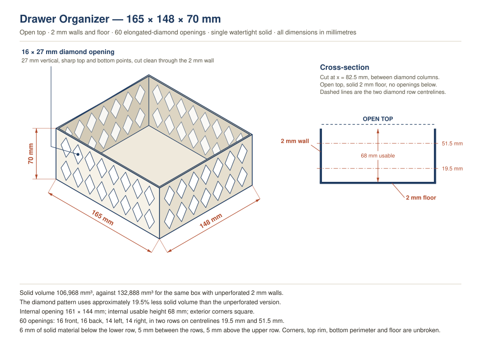

Drawer Organizer: A Watertight STEP File Generated Straight From the Change Request
The whole spec for this part arrived as prose in a ServiceNow change request — every dimension, every hole position, and a list of checks the finished model had to survive. No sketching, no GUI: the interesting question was whether a written spec that precise could go straight to a manufacturable STEP file without a human touching the geometry.
The Model
Drag to rotate. This is a tessellated preview of the same solid the STEP file contains — useful for eyeballing the pattern, not for measuring.
What It Has To Be
An open-top drawer organizer sized to a specific drawer, with elongated vertical diamond openings through all four walls. The diamonds are the point: they cut filament use meaningfully while leaving continuous material at every place the box actually carries load.
| Parameter | Value | Why it matters |
|---|---|---|
| Exterior | 165 × 148 × 70 mm | Fits the drawer; nothing may drift. |
| Wall / floor thickness | 2 mm each | Four or five perimeters at a typical 0.4 mm nozzle. |
| Internal opening | 161 × 144 mm | Usable footprint after walls. |
| Internal usable height | 68 mm | 70 mm exterior less the 2 mm floor. |
| Diamond opening | 16 mm wide × 27 mm tall | Long axis vertical, sharp top and bottom points. |
| Rows | Centrelines at 19.5 and 51.5 mm | Leaves 6 mm below, 5 mm between, 5 mm above. |
| Opening count | 60 total — 16/16/14/14 | Eight per row on the 165 mm walls, seven on the 148 mm walls. |
| Top | Completely open | Print-in-place, no supports. |
The diamond orientation is doing structural work, not just decoration. Points at top and bottom mean every opening is self-supporting when printed vertically — the overhang angle never goes shallow enough to need support material — and the material left between openings forms continuous diagonal ribs rather than isolated posts.
Technical Preview
Generated from the same parameters as the solid, so the drawing cannot drift out of sync with the model:

How It Was Built
Parametrically, in CadQuery — Python driving the OpenCASCADE kernel. That matters for a spec this dimension-heavy: every number in the table above is a named constant at the top of one file, so a dimension change is an edit and a re-run, not a re-model.
The construction is deliberately boring, because boring booleans are the ones that stay watertight:
- Build the solid outer box, then cut a single rectangular cavity for the interior. The cavity is deliberately extended past the rim so the boolean never has to resolve two coincident faces — that is the case that quietly produces invalid geometry.
- Build each of the 60 diamonds as its own four-sided prism, oriented to the wall it passes through and overshooting by 1 mm on both sides so it is a clean through-cut rather than a face-grazing one.
- Subtract them one at a time and export STEP AP214.
The whole run takes about six seconds, which is the real argument for doing it this way — a dimension I got wrong costs one re-run, not an afternoon.
Validation
The ticket listed the checks it wanted, so validation re-imports the exported STEP file from disk and tests that, rather than testing the in-memory model that produced it. A model that is valid in the session but exports badly is exactly the failure worth catching.
| Check | Required | Measured | |
|---|---|---|---|
| Bounding box | 165 × 148 × 70 mm | 165.000 × 148.000 × 70.000 mm | Pass |
| Number of solids | 1 | 1 | Pass |
| Model validity | true | true (BRepCheck_Analyzer) | Pass |
| Watertight / manifold | required | 1 closed shell; every edge bounded by exactly 2 faces | Pass |
| Solid volume | ≈ 106,968 mm³ | 106,968.000 mm³ | Pass |
| Volume reduction | ≈ 19.5% | 19.505% (against 132,888 mm³ unperforated) | Pass |
| Opening count | 16 / 16 / 14 / 14 | 16 front, 16 back, 14 left, 14 right — 60 total | Pass |
| No disconnected fragments | required | single solid, single shell | Pass |
| No openings through the bottom | required | floor solid on a 3 mm probe grid | Pass |
| Corners and top rim intact | required | all four vertical corners solid full height; rim and bottom perimeter unbroken | Pass |
| Topology (independent) | genus 60 — one closed surface with 60 through-holes | Euler characteristic −118 on the exported mesh | Pass |
| Diamond geometry | 16 × 27 mm, sharp vertical points | extents confirmed; bounding-box corners solid, so the profile is a diamond and not a rectangle | Pass |
Two of those checks are worth calling out. The volume came out at 106,968.000 mm³ against a target of “approximately 106,968” — not approximately, exactly, because none of the 60 cutouts overlaps a corner or another cutout, so the closed-form arithmetic and the kernel have to agree. If they had disagreed, something had silently moved.
The topology row is the check I trust most, because nothing about it depends on knowing where the holes were supposed to be. Tessellate the solid, count vertices, edges and faces, and the Euler characteristic comes out at −118 — which for a single closed surface means genus 60, sixty holes passing clean through. A cutout that failed to penetrate, or two that merged into one, would change that number. It is the same count arrived at from the opposite direction.
The other is the diamond-versus-rectangle check. Extent tests alone cannot tell those two shapes apart — a 16 × 27 mm rectangle passes every extent test a diamond does. Probing just inside the corner of the opening’s bounding box and confirming it is still solid is what actually proves the profile tapers to points.
On Not Needing Another Model For This
The change request allowed for the possibility that I could not produce real CAD, and asked for a plan to hand the job off to another API or MCP server if so. That turned out not to be necessary, and the reason is worth recording: generating a STEP file is not a rendering problem, it is a geometry-kernel problem. CadQuery installs as a normal Python package and brings OpenCASCADE — the same kernel underneath FreeCAD — with it. Writing the script and running it are both things that happen locally.
A hand-off would only earn its keep for work a kernel genuinely cannot do: organic surfacing, topology optimization, or generating a mesh from a text description rather than from dimensions. For a fully dimensioned part like this one, another model in the loop would add a round trip and a second thing to verify, and would still have to produce the same booleans.
Files
- organizer_165x148x70_2mm.step
- organizer_165x148x70_2mm_preview.svg
- make_organizer.py
- organizer_165x148x70_2mm.glb
{kind=link}
What Is Still Open
- No test print. Every claim on this page is geometric. Whether a 2 mm wall with 60 holes in it stays rigid when loaded, and whether the diamond points bridge cleanly at the top of each opening, are questions a printer answers and a kernel does not.
- Material and orientation are unspecified. The spec is silent on both. Printed upright with the open top up, no opening needs support — but that assumption should be confirmed in the slicer before committing to a six-hour print.
- The 19.5% figure is material saved, not time saved. Sixty openings add a great deal of perimeter, and perimeter is slow. Wall-clock print time may not drop anywhere near 19.5%.
- No drawer was measured. 165 × 148 mm came from the ticket. Worth a caliper check against the real drawer before printing, since a part that is 1 mm too wide is scrap.